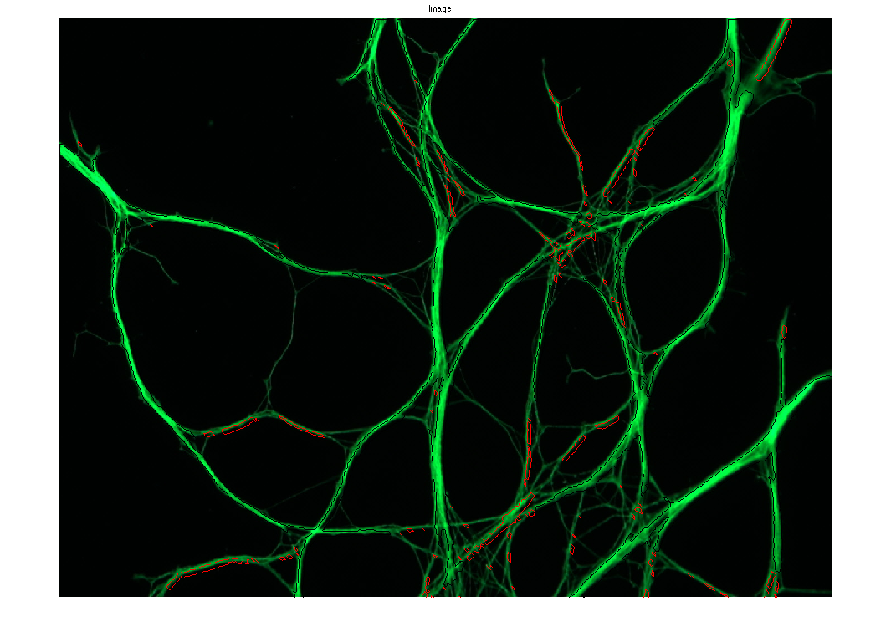

Contents
close all; clear all;
img0 = imread('no+degeneration.jpg');
img1 = imread('very+little+degeneration.jpg');
img2 = imread('medium+degeneration.jpg');
img3 = imread('70-80+percent+degeneration.jpg');
CHANGE THESE TO PROCESS THE IMAGE YOU WANT %%%
load res_no_degen.mat
figure(2); imshow(img0);
cur_img = res(:, :, 1);
sel = strel('square', 5);
cur_img_erode = imerode(cur_img, sel);
cur_img_erode = cur_img;
[B, L] = bwboundaries(cur_img_erode, 'noholes');
area = 0; area_big = 0; counter = 0; area_acc = 0;
counter = 0;
hold on;
for k = 1:length(B)
boundary = B{k};
area = length(boundary);
if(area < 400)
plot(boundary(:,2), boundary(:,1), 'r', 'LineWidth', 1);
area_acc = area_acc + area;
counter = counter + 1;
else
plot(boundary(:,2), boundary(:,1), 'w', 'LineWidth', 1);
area_big = area_big + area;
end
y = boundary(:, 2);
x = boundary(:, 1);
end
hold off;
title(['Image: ']);
blob_count_max = length(B)
blob_count_min = counter
blob_count_estimate = counter + (area_big./(area_acc./counter))
Warning: Image is too big to fit on screen; displaying at 67%
blob_count_max =
116
blob_count_min =
111
blob_count_estimate =
450.2629
